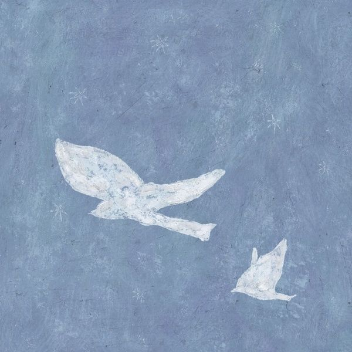

안녕하세요, 라보엠입니다.
오늘은 빌리어코스티가 2026년 옛노래를 다시 꺼내보는 '조용히 흐르던 우리의 시간' 앨범을 소개해보겠습니다. 2집 〈보통의 겨울〉에서 처음 선보인, 이제는 리메이크 프로젝트의 두번째 얼굴이 되어 다시 돌아온 이 곡은, 시간이 흘러도 변하지 않는 빌리어코스티만의 온기를 가장 잘 담고 있는 노래입니다.

2015년 겨울부터 2026년 지금까지, 변함없이 우리 곁에
'조용히 흐르던 우리의 시간'을 처음 들었던 게 벌써 10년 전인데요, 2집 〈보통의 겨울〉 10번 트랙에 조용히 자리 잡고 있던 이 곡은, 앨범 전체를 감싸던 그 특유의 겨울 정서를 가장 따뜻하게 품고 있었습니다. 잔잔한 피아노 선율과 스트링, 그리고 빌코 특유의 절제된 목소리가 만들어낸 그 분위기를 아직도 생생하게 기억합니다. 2집 타이틀 보통의 겨울도 오늘같은 겨울날 듣기 좋죠 추천드립니다.
그리고 2025년 말, 빌리어코스티는 이 곡의 제목을 그대로 가져와 리메이크 프로젝트 〈조용히 흐르던 우리의 시간 Vol.1〉을 발표했습니다. 2026년 1월 25일에는 Vol.2까지 공개되면서, 이 노래가 빌리어코스티가 우리에게 전하고 싶었던 어떤 마음 그 자체였다는 걸 새삼 깨닫게 됩니다. "마치 오래된 사진을 들춰보듯, 삶의 어느 계절을 함께 지나온 노래들을 다시 소중히 꺼내 보고 싶었다"는 그의 말처럼 말이죠.
가사 – 눈부셨던 계절, 포근했던 우리
이 곡의 가사는 언제 들어도 마음 한편이 저려옵니다.
"눈부시게 아름답던 너의 그 모습과
하얗게 쌓인 겨울에 포근했던 우리
아낌없이 남김없이 함께 흘러가던
조용히 흐르던 우리의 시간"
이미 끝나버린 이야기를 하면서도, 먼저 떠오르는 건 상처가 아니라 눈부셨던 순간들입니다. '아낌없이, 남김없이 함께 흘러가던'이라는 표현이 참 빌리어코스티답습니다. 그때는 당연했던 시간들이 지나고 나니 얼마나 소중했는지, 그 깨달음을 이렇게 담백하게 담아내다니..
후반부로 갈수록 가사는 더 솔직해집니다. 조용히 흘러가던 시간이 어느 날 멈춰버린 뒤, 혼자 그 자리를 다시 찾아온 화자는 "다시 돌아갈 수 없다는 걸 알면서도, 그 계절을 천천히 더듬어 본다"고 노래합니다. 직접적으로 '보고 싶다'고 말하지 않아도, 한 줄 한 줄에서 그리움이 물결처럼 밀려오는 게 느껴집니다. 이런 섬세함이 빌코 음악의 진짜 매력이 아닐까 싶습니다.
음악 – 피아노와 목소리, 최소한의 악기가 만든 여백
'조용히 흐르던 우리의 시간'은 빌리어코스티를 오래 들어온 사람이라면 누구나 '아, 이거 빌코 스타일이다' 하고 바로 알아챌 수 있는 곡입니다. 따뜻한 톤의 피아노와 담백한 보컬, 그리고 군더더기 없는 편곡. 도입부부터 반복되는 코드와 멜로디가 만들어내는 안정감은, 마치 겨울 저녁 하얀 입김 사이로 천천히 말을 건네는 친구 같습니다. 리메이크 프로젝트 Vol.1, Vol.2에서도 이 방향성은 그대로 이어지고 있습니다. "흔하디흔한 위로를 붙잡고 무너지지 않는 척 살아가던 마음"을 위한 음악이라는 앨범 소개처럼, 빌코는 과장된 재해석 대신 원곡의 감정선을 존중하며 지금의 목소리로 다시 불러주고 있습니다. 이게 참 고맙습니다. 10년 전 그 마음 그대로, 하지만 10년이 더 쌓인 깊이로 다시 들려주니 말입니다.
'우리'와 '나' 사이, 조용히 흘러가는 마음들
이 곡에서 제가 가장 좋아하는 건 '우리'라는 단어입니다. 이미 끝난 기억인데도 화자는 계속 '우리의 시간'이라고 말합니다. 그래서 이 노래는 단순한 이별 노래가 아니라, 함께했던 시간이 완전히 사라지지 않고 지금도 나를 지탱해주고 있다는 고백처럼 들립니다.
리메이크 프로젝트의 이름으로 이 곡을 다시 불러낸 것도 그런 의미가 아닐까 생각합니다. 각자의 인생에서 조용히 흘러갔던 어떤 계절들, 크게 요란하지 않았지만 돌아보면 가장 마음이 편해지는 순간들. 빌리어코스티는 그 시간들을 다시 소환해서, 함께 견뎌온 우리 모두에게 작은 안부를 건네는 것 같습니다.
빌리어코스티의 음악을 오래 듣다 보면 알게 됩니다. 그가 만드는 노래들은 한순간 반짝이고 사라지는 게 아니라, 시간이 지나도 곁에 남아 우리와 함께 나이 들어간다는 걸 말입니다. '조용히 흐르던 우리의 시간'이 바로 그런 곡입니다.
맺음말
조용히 흘러가던 시간이, 어느 날 문득 그리워지는 밤이 있습니다. 오늘이 그런 날이라면 빌리어코스티의 '조용히 흐르던 우리의 시간'을 다시 한번 들어보시기 바랍니다. 겨울과 봄 사이, 혹은 바쁜 하루와 하루 사이에 놓여 있던 당신만의 장면들이, 이 노래를 따라 천천히 떠오를 것입니다. 그리고 오래된 팬으로서 한마디 더 보태자면, 빌리어코스티의 음악은 언제나 그렇듯 우리 곁에서 조용히, 그러나 확실하게 함께해줄 것입니다.